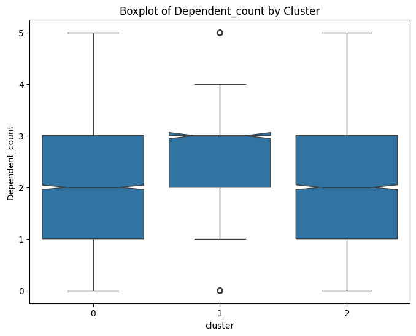

import pandas as pd
data = pd.read_csv('BankChurners.csv').set_index('CLIENTNUM')
data
| Attrition_Flag | Customer_Age | Gender | Dependent_count | Education_Level | Marital_Status | Income_Category | Card_Category | Months_on_book | Total_Relationship_Count | ... | Credit_Limit | Total_Revolving_Bal | Avg_Open_To_Buy | Total_Amt_Chng_Q4_Q1 | Total_Trans_Amt | Total_Trans_Ct | Total_Ct_Chng_Q4_Q1 | Avg_Utilization_Ratio | Naive_Bayes_Classifier_Attrition_Flag_Card_Category_Contacts_Count_12_mon_Dependent_count_Education_Level_Months_Inactive_12_mon_1 | Naive_Bayes_Classifier_Attrition_Flag_Card_Category_Contacts_Count_12_mon_Dependent_count_Education_Level_Months_Inactive_12_mon_2 | |
|---|---|---|---|---|---|---|---|---|---|---|---|---|---|---|---|---|---|---|---|---|---|
| CLIENTNUM | |||||||||||||||||||||
| 768805383 | Existing Customer | 45 | M | 3 | High School | Married | $60K - $80K | Blue | 39 | 5 | ... | 12691.0 | 777 | 11914.0 | 1.335 | 1144 | 42 | 1.625 | 0.061 | 0.000093 | 0.999910 |
| 818770008 | Existing Customer | 49 | F | 5 | Graduate | Single | Less than $40K | Blue | 44 | 6 | ... | 8256.0 | 864 | 7392.0 | 1.541 | 1291 | 33 | 3.714 | 0.105 | 0.000057 | 0.999940 |
| 713982108 | Existing Customer | 51 | M | 3 | Graduate | Married | $80K - $120K | Blue | 36 | 4 | ... | 3418.0 | 0 | 3418.0 | 2.594 | 1887 | 20 | 2.333 | 0.000 | 0.000021 | 0.999980 |
| 769911858 | Existing Customer | 40 | F | 4 | High School | Unknown | Less than $40K | Blue | 34 | 3 | ... | 3313.0 | 2517 | 796.0 | 1.405 | 1171 | 20 | 2.333 | 0.760 | 0.000134 | 0.999870 |
| 709106358 | Existing Customer | 40 | M | 3 | Uneducated | Married | $60K - $80K | Blue | 21 | 5 | ... | 4716.0 | 0 | 4716.0 | 2.175 | 816 | 28 | 2.500 | 0.000 | 0.000022 | 0.999980 |
| ... | ... | ... | ... | ... | ... | ... | ... | ... | ... | ... | ... | ... | ... | ... | ... | ... | ... | ... | ... | ... | ... |
| 772366833 | Existing Customer | 50 | M | 2 | Graduate | Single | $40K - $60K | Blue | 40 | 3 | ... | 4003.0 | 1851 | 2152.0 | 0.703 | 15476 | 117 | 0.857 | 0.462 | 0.000191 | 0.999810 |
| 710638233 | Attrited Customer | 41 | M | 2 | Unknown | Divorced | $40K - $60K | Blue | 25 | 4 | ... | 4277.0 | 2186 | 2091.0 | 0.804 | 8764 | 69 | 0.683 | 0.511 | 0.995270 | 0.004729 |
| 716506083 | Attrited Customer | 44 | F | 1 | High School | Married | Less than $40K | Blue | 36 | 5 | ... | 5409.0 | 0 | 5409.0 | 0.819 | 10291 | 60 | 0.818 | 0.000 | 0.997880 | 0.002118 |
| 717406983 | Attrited Customer | 30 | M | 2 | Graduate | Unknown | $40K - $60K | Blue | 36 | 4 | ... | 5281.0 | 0 | 5281.0 | 0.535 | 8395 | 62 | 0.722 | 0.000 | 0.996710 | 0.003294 |
| 714337233 | Attrited Customer | 43 | F | 2 | Graduate | Married | Less than $40K | Silver | 25 | 6 | ... | 10388.0 | 1961 | 8427.0 | 0.703 | 10294 | 61 | 0.649 | 0.189 | 0.996620 | 0.003377 |
10127 rows × 22 columns
data.info()
<class 'pandas.core.frame.DataFrame'>
Index: 10127 entries, 768805383 to 714337233
Data columns (total 22 columns):
# Column Non-Null Count Dtype
--- ------ -------------- -----
0 Attrition_Flag 10127 non-null object
1 Customer_Age 10127 non-null int64
2 Gender 10127 non-null object
3 Dependent_count 10127 non-null int64
4 Education_Level 10127 non-null object
5 Marital_Status 10127 non-null object
6 Income_Category 10127 non-null object
7 Card_Category 10127 non-null object
8 Months_on_book 10127 non-null int64
9 Total_Relationship_Count 10127 non-null int64
10 Months_Inactive_12_mon 10127 non-null int64
11 Contacts_Count_12_mon 10127 non-null int64
12 Credit_Limit 10127 non-null float64
13 Total_Revolving_Bal 10127 non-null int64
14 Avg_Open_To_Buy 10127 non-null float64
15 Total_Amt_Chng_Q4_Q1 10127 non-null float64
16 Total_Trans_Amt 10127 non-null int64
17 Total_Trans_Ct 10127 non-null int64
18 Total_Ct_Chng_Q4_Q1 10127 non-null float64
19 Avg_Utilization_Ratio 10127 non-null float64
20 Naive_Bayes_Classifier_Attrition_Flag_Card_Category_Contacts_Count_12_mon_Dependent_count_Education_Level_Months_Inactive_12_mon_1 10127 non-null float64
21 Naive_Bayes_Classifier_Attrition_Flag_Card_Category_Contacts_Count_12_mon_Dependent_count_Education_Level_Months_Inactive_12_mon_2 10127 non-null float64
dtypes: float64(7), int64(9), object(6)
memory usage: 1.8+ MB
data['Attrition_Flag'].unique()
array(['Existing Customer', 'Attrited Customer'], dtype=object)
data['Education_Level'].unique()
array(['High School', 'Graduate', 'Uneducated', 'Unknown', 'College',
'Post-Graduate', 'Doctorate'], dtype=object)
data['Marital_Status'].unique()
array(['Married', 'Single', 'Unknown', 'Divorced'], dtype=object)
data['Income_Category'].unique()
array(['$60K - $80K', 'Less than $40K', '$80K - $120K', '$40K - $60K',
'$120K +', 'Unknown'], dtype=object)
data['Card_Category'].unique()
array(['Blue', 'Gold', 'Silver', 'Platinum'], dtype=object)
33. Clustering#
data2 = data.copy()
data2 = data2.drop(['Attrition_Flag','Naive_Bayes_Classifier_Attrition_Flag_Card_Category_Contacts_Count_12_mon_Dependent_count_Education_Level_Months_Inactive_12_mon_1','Naive_Bayes_Classifier_Attrition_Flag_Card_Category_Contacts_Count_12_mon_Dependent_count_Education_Level_Months_Inactive_12_mon_2'], axis=1)
data2.head()
| Customer_Age | Gender | Dependent_count | Education_Level | Marital_Status | Income_Category | Card_Category | Months_on_book | Total_Relationship_Count | Months_Inactive_12_mon | Contacts_Count_12_mon | Credit_Limit | Total_Revolving_Bal | Avg_Open_To_Buy | Total_Amt_Chng_Q4_Q1 | Total_Trans_Amt | Total_Trans_Ct | Total_Ct_Chng_Q4_Q1 | Avg_Utilization_Ratio | |
|---|---|---|---|---|---|---|---|---|---|---|---|---|---|---|---|---|---|---|---|
| CLIENTNUM | |||||||||||||||||||
| 768805383 | 45 | M | 3 | High School | Married | $60K - $80K | Blue | 39 | 5 | 1 | 3 | 12691.0 | 777 | 11914.0 | 1.335 | 1144 | 42 | 1.625 | 0.061 |
| 818770008 | 49 | F | 5 | Graduate | Single | Less than $40K | Blue | 44 | 6 | 1 | 2 | 8256.0 | 864 | 7392.0 | 1.541 | 1291 | 33 | 3.714 | 0.105 |
| 713982108 | 51 | M | 3 | Graduate | Married | $80K - $120K | Blue | 36 | 4 | 1 | 0 | 3418.0 | 0 | 3418.0 | 2.594 | 1887 | 20 | 2.333 | 0.000 |
| 769911858 | 40 | F | 4 | High School | Unknown | Less than $40K | Blue | 34 | 3 | 4 | 1 | 3313.0 | 2517 | 796.0 | 1.405 | 1171 | 20 | 2.333 | 0.760 |
| 709106358 | 40 | M | 3 | Uneducated | Married | $60K - $80K | Blue | 21 | 5 | 1 | 0 | 4716.0 | 0 | 4716.0 | 2.175 | 816 | 28 | 2.500 | 0.000 |
data2 = pd.get_dummies(data2)
from sklearn.cluster import KMeans
import numpy as np
kmeans = KMeans(n_clusters=5, random_state = 42)
kmeans.fit(data2)
KMeans(n_clusters=5, random_state=42)In a Jupyter environment, please rerun this cell to show the HTML representation or trust the notebook.
On GitHub, the HTML representation is unable to render, please try loading this page with nbviewer.org.
KMeans(n_clusters=5, random_state=42)
pred = kmeans.predict(data2)
pred
array([2, 3, 0, ..., 3, 3, 3], dtype=int32)
# prompt: fai fit di un kmeans con 5 cluster su data2 usando uno standard scaler senza usare le pipeline di sklearn
from sklearn.preprocessing import StandardScaler
# Create a StandardScaler object
scaler = StandardScaler()
# Fit the scaler to your data
scaler.fit(data2)
# Transform the data using the fitted scaler
scaled_data = scaler.transform(data2)
# Now, fit the KMeans model on the scaled data
kmeans = KMeans(n_clusters=5, random_state=42, n_init = 'auto')
kmeans.fit(scaled_data)
# Predict cluster labels for your data
pred = kmeans.predict(scaled_data)
# Print or use the predictions as needed
pred
# prompt: fai fit di un kmeans con 5 cluster su data2 usando uno standard scaler e le pipeline di scikit-learn
from sklearn.pipeline import Pipeline
from sklearn.preprocessing import StandardScaler
pipeline = Pipeline([
('scaler', StandardScaler()),
('kmeans', KMeans(n_clusters=5, n_init = 'auto', random_state=42))
])
pipeline.fit(data2)
pred = pipeline.predict(data2)
pred
array([4, 1, 4, ..., 0, 4, 3], dtype=int32)
pipeline
Pipeline(steps=[('scaler', StandardScaler()),
('kmeans', KMeans(n_clusters=5, random_state=42))])In a Jupyter environment, please rerun this cell to show the HTML representation or trust the notebook. On GitHub, the HTML representation is unable to render, please try loading this page with nbviewer.org.
Pipeline(steps=[('scaler', StandardScaler()),
('kmeans', KMeans(n_clusters=5, random_state=42))])StandardScaler()
KMeans(n_clusters=5, random_state=42)
pipeline.named_steps['kmeans']
KMeans(n_clusters=5, random_state=42)In a Jupyter environment, please rerun this cell to show the HTML representation or trust the notebook.
On GitHub, the HTML representation is unable to render, please try loading this page with nbviewer.org.
KMeans(n_clusters=5, random_state=42)
# prompt: trova il miglior K con metodo elbow
import matplotlib.pyplot as plt
# Calculate inertia for different values of k
inertia = []
k_values = range(1, 101) # Test k values from 1 to 10
for k in k_values:
pipeline = Pipeline([
('scaler', StandardScaler()),
('kmeans', KMeans(n_clusters=k, n_init='auto', random_state=42))
])
pipeline.fit(data2)
inertia.append(pipeline.named_steps['kmeans'].inertia_)
# Plot the elbow method graph
plt.plot(k_values, inertia, marker='o')
plt.xlabel('Number of Clusters (k)')
plt.ylabel('Inertia')
plt.title('Elbow Method for Optimal k')
plt.show()
# prompt: trova il miglior k con silhoutte
from sklearn.metrics import silhouette_score
from sklearn.metrics import pairwise_distances
# Calculate silhouette scores for different values of k
silhouette_scores = []
k_values = range(2, 21) # Test k values from 2 to 100 (Silhouette score is not defined for k=1)
pwd = pairwise_distances(data2)
for k in k_values:
pipeline = Pipeline([
('scaler', StandardScaler()),
('kmeans', KMeans(n_clusters=k, n_init='auto', random_state=42))
])
pipeline.fit(data2)
labels = pipeline.predict(data2)
silhouette_avg = silhouette_score(pwd, labels, metric='precomputed')
silhouette_scores.append(silhouette_avg)
# Find the best k based on the highest silhouette score
best_k = k_values[np.argmax(silhouette_scores)]
print(f"Best k based on Silhouette score: {best_k}")
# Plot the silhouette scores
plt.plot(k_values, silhouette_scores, marker='o')
plt.xlabel('Number of Clusters (k)')
plt.ylabel('Silhouette Score')
plt.title('Silhouette Score for Optimal k')
plt.show()
Best k based on Silhouette score: 2
# prompt: effettua la silhouette analysis per k=range(1,6)
import matplotlib.cm as cm
import matplotlib.pyplot as plt
import numpy as np
from sklearn.cluster import KMeans
from sklearn.datasets import make_blobs
from sklearn.metrics import silhouette_samples, silhouette_score
# Calculate silhouette scores for different values of k
silhouette_scores = []
k_values = range(2, 6) # Test k values from 2 to 5 (Silhouette score is not defined for k=1)
for k in k_values:
pipeline = Pipeline([
('scaler', StandardScaler()),
('kmeans', KMeans(n_clusters=k, n_init='auto', random_state=42))
])
pipeline.fit(data2)
cluster_labels = pipeline.predict(data2)
silhouette_avg = silhouette_score(data2, cluster_labels) # Use data2 directly here
silhouette_scores.append(silhouette_avg)
sample_silhouette_values = silhouette_samples(data2, cluster_labels)
fig, (ax1) = plt.subplots(1, 1)
fig.set_size_inches(18, 7)
# The 1st subplot is the silhouette plot
# The silhouette coefficient can range from -1, 1 but in this example all
# lie within [-0.1, 1]
#ax1.set_xlim([-0.1, 1])
# The (n_clusters+1)*10 is for inserting blank space between silhouette
# plots of individual clusters, to demarcate them clearly.
#ax1.set_ylim([0, len(data2) + (k + 1) * 10])
y_lower = 10
for i in range(k):
# Aggregate the silhouette scores for samples belonging to
# cluster i, and sort them
ith_cluster_silhouette_values = sample_silhouette_values[cluster_labels == i]
ith_cluster_silhouette_values.sort()
size_cluster_i = ith_cluster_silhouette_values.shape[0]
y_upper = y_lower + size_cluster_i
color = cm.nipy_spectral(float(i) / k)
ax1.fill_betweenx(
np.arange(y_lower, y_upper),
0,
ith_cluster_silhouette_values,
facecolor=color,
edgecolor=color,
alpha=0.7,
)
# Label the silhouette plots with their cluster numbers at the middle
ax1.text(-0.05, y_lower + 0.5 * size_cluster_i, str(i))
# Compute the new y_lower for next plot
y_lower = y_upper + 10 # 10 for the 0 samples
ax1.set_title(f"The silhouette plot for k={k}")
ax1.set_xlabel("The silhouette coefficient values")
ax1.set_ylabel("Cluster label")
# The vertical line for average silhouette score of all the values
ax1.axvline(x=silhouette_avg, color="red", linestyle="--")
ax1.set_yticks([]) # Clear the yaxis labels / ticks
ax1.set_xticks([-0.1, 0, 0.2, 0.4, 0.6, 0.8, 1])
# Find the best k based on the highest silhouette score
best_k = k_values[np.argmax(silhouette_scores)]
print(f"Best k based on Silhouette score: {best_k}")
# Plot the silhouette scores
plt.figure(figsize=(10, 6))
plt.plot(k_values, silhouette_scores, marker='o')
plt.xlabel('Number of Clusters (k)')
plt.ylabel('Silhouette Score')
plt.title('Silhouette Score for Optimal k')
plt.show()
Best k based on Silhouette score: 2

# prompt: can you find the best k for a GMM with elbow?
from sklearn.mixture import GaussianMixture
# Calculate BIC scores for different values of k
bic_scores = []
k_values = range(2, 11) # Test k values from 2 to 20
scaler = StandardScaler()
scaled_data = scaler.fit_transform(data2)
for k in k_values:
gmm = GaussianMixture(n_components=k, random_state=42, n_init=10)
gmm.fit(scaled_data) # Use scaled_data here
bic_scores.append(gmm.bic(scaled_data))
# Find the best k based on the lowest BIC score
best_k = k_values[np.argmin(bic_scores)]
print(f"Best k based on BIC score: {best_k}")
# Plot the BIC scores
plt.plot(k_values, bic_scores, marker='o')
plt.xlabel('Number of Clusters (k)')
plt.ylabel('BIC Score')
plt.title('BIC Score for Optimal k in GMM')
plt.show()
Best k based on BIC score: 10
# prompt: effettua la silhouette analysis per k=range(1,6)
import matplotlib.cm as cm
import matplotlib.pyplot as plt
import numpy as np
from sklearn.cluster import KMeans
from sklearn.datasets import make_blobs
from sklearn.metrics import silhouette_samples, silhouette_score
# Calculate silhouette scores for different values of k
silhouette_scores = []
k_values = range(2, 6) # Test k values from 2 to 5 (Silhouette score is not defined for k=1)
scaler = StandardScaler()
scaled_data = scaler.fit_transform(data2)
for k in k_values:
gmm = GaussianMixture(n_components=k, random_state=42, n_init=10)
gmm.fit(scaled_data)
cluster_labels = pipeline.gmm(data2)
silhouette_avg = silhouette_score(data2, cluster_labels) # Use data2 directly here
silhouette_scores.append(silhouette_avg)
sample_silhouette_values = silhouette_samples(data2, cluster_labels)
fig, (ax1) = plt.subplots(1, 1)
fig.set_size_inches(18, 7)
# The 1st subplot is the silhouette plot
# The silhouette coefficient can range from -1, 1 but in this example all
# lie within [-0.1, 1]
#ax1.set_xlim([-0.1, 1])
# The (n_clusters+1)*10 is for inserting blank space between silhouette
# plots of individual clusters, to demarcate them clearly.
#ax1.set_ylim([0, len(data2) + (k + 1) * 10])
y_lower = 10
for i in range(k):
# Aggregate the silhouette scores for samples belonging to
# cluster i, and sort them
ith_cluster_silhouette_values = sample_silhouette_values[cluster_labels == i]
ith_cluster_silhouette_values.sort()
size_cluster_i = ith_cluster_silhouette_values.shape[0]
y_upper = y_lower + size_cluster_i
color = cm.nipy_spectral(float(i) / k)
ax1.fill_betweenx(
np.arange(y_lower, y_upper),
0,
ith_cluster_silhouette_values,
facecolor=color,
edgecolor=color,
alpha=0.7,
)
# Label the silhouette plots with their cluster numbers at the middle
ax1.text(-0.05, y_lower + 0.5 * size_cluster_i, str(i))
# Compute the new y_lower for next plot
y_lower = y_upper + 10 # 10 for the 0 samples
ax1.set_title(f"The silhouette plot for k={k}")
ax1.set_xlabel("The silhouette coefficient values")
ax1.set_ylabel("Cluster label")
# The vertical line for average silhouette score of all the values
ax1.axvline(x=silhouette_avg, color="red", linestyle="--")
ax1.set_yticks([]) # Clear the yaxis labels / ticks
ax1.set_xticks([-0.1, 0, 0.2, 0.4, 0.6, 0.8, 1])
# Find the best k based on the highest silhouette score
best_k = k_values[np.argmax(silhouette_scores)]
print(f"Best k based on Silhouette score: {best_k}")
# Plot the silhouette scores
plt.figure(figsize=(10, 6))
plt.plot(k_values, silhouette_scores, marker='o')
plt.xlabel('Number of Clusters (k)')
plt.ylabel('Silhouette Score')
plt.title('Silhouette Score for Optimal k')
plt.show()
Best k based on Silhouette score: 2

# prompt: fai pca sul dataset "data2" e mostra uno scree plot
import pandas as pd
import numpy as np
import matplotlib.pyplot as plt
from sklearn.decomposition import PCA
from sklearn.preprocessing import StandardScaler
# Assuming 'data2' is already defined as in your provided code
# ... (your existing code to define data2) ...
# Scale the data
scaler = StandardScaler()
scaled_data = scaler.fit_transform(data2)
# Apply PCA
pca = PCA()
pca.fit(scaled_data)
# Scree plot
plt.figure(figsize=(10, 6))
plt.plot(np.cumsum(pca.explained_variance_ratio_))
plt.xlabel('Number of Components')
plt.ylabel('Cumulative Explained Variance')
plt.title('Scree Plot')
plt.grid(True)
plt.show()
np.cumsum(pca.explained_variance_ratio_)[24]
0.9472334124009314
pca = PCA(n_components=25)
pca.fit(scaled_data)
x_pca = pca.transform(scaled_data)
# prompt: effettua la silhouette analysis per k=range(1,6)
import matplotlib.cm as cm
import matplotlib.pyplot as plt
import numpy as np
from sklearn.cluster import KMeans
from sklearn.datasets import make_blobs
from sklearn.metrics import silhouette_samples, silhouette_score
# Calculate silhouette scores for different values of k
silhouette_scores = []
k_values = range(2, 6) # Test k values from 2 to 5 (Silhouette score is not defined for k=1)
pca = PCA()
pca.fit(scaled_data)
x_pca = pca.transform(scaled_data)
for k in k_values:
kmeans = KMeans(n_clusters=k, n_init='auto', random_state=42)
kmeans.fit(x_pca)
cluster_labels = kmeans.predict(x_pca)
silhouette_avg = silhouette_score(x_pca, cluster_labels) # Use data2 directly here
silhouette_scores.append(silhouette_avg)
sample_silhouette_values = silhouette_samples(x_pca, cluster_labels)
fig, (ax1) = plt.subplots(1, 1)
fig.set_size_inches(18, 7)
# The 1st subplot is the silhouette plot
# The silhouette coefficient can range from -1, 1 but in this example all
# lie within [-0.1, 1]
#ax1.set_xlim([-0.1, 1])
# The (n_clusters+1)*10 is for inserting blank space between silhouette
# plots of individual clusters, to demarcate them clearly.
#ax1.set_ylim([0, len(data2) + (k + 1) * 10])
y_lower = 10
for i in range(k):
# Aggregate the silhouette scores for samples belonging to
# cluster i, and sort them
ith_cluster_silhouette_values = sample_silhouette_values[cluster_labels == i]
ith_cluster_silhouette_values.sort()
size_cluster_i = ith_cluster_silhouette_values.shape[0]
y_upper = y_lower + size_cluster_i
color = cm.nipy_spectral(float(i) / k)
ax1.fill_betweenx(
np.arange(y_lower, y_upper),
0,
ith_cluster_silhouette_values,
facecolor=color,
edgecolor=color,
alpha=0.7,
)
# Label the silhouette plots with their cluster numbers at the middle
ax1.text(-0.05, y_lower + 0.5 * size_cluster_i, str(i))
# Compute the new y_lower for next plot
y_lower = y_upper + 10 # 10 for the 0 samples
ax1.set_title(f"The silhouette plot for k={k}")
ax1.set_xlabel("The silhouette coefficient values")
ax1.set_ylabel("Cluster label")
# The vertical line for average silhouette score of all the values
ax1.axvline(x=silhouette_avg, color="red", linestyle="--")
ax1.set_yticks([]) # Clear the yaxis labels / ticks
ax1.set_xticks([-0.1, 0, 0.2, 0.4, 0.6, 0.8, 1])
# Find the best k based on the highest silhouette score
best_k = k_values[np.argmax(silhouette_scores)]
print(f"Best k based on Silhouette score: {best_k}")
# Plot the silhouette scores
plt.figure(figsize=(10, 6))
plt.plot(k_values, silhouette_scores, marker='o')
plt.xlabel('Number of Clusters (k)')
plt.ylabel('Silhouette Score')
plt.title('Silhouette Score for Optimal k')
plt.show()
Best k based on Silhouette score: 3
import seaborn as sns
kmeans = KMeans(n_clusters=3, n_init='auto', random_state=42)
kmeans.fit(x_pca)
cluster_labels = kmeans.predict(x_pca)
sns.scatterplot(x=x_pca[:,0], y=x_pca[:,1], hue = cluster_labels, palette=sns.color_palette('hls', 3))
<Axes: >
data2['cluster'] = cluster_labels
data['cluster'] = cluster_labels
(np.cov(x_pca.T)*100).astype(np.int32)
array([[438, 0, 0, ..., 0, 0, 0],
[ 0, 255, 0, ..., 0, 0, 0],
[ 0, 0, 194, ..., 0, 0, 0],
...,
[ 0, 0, 0, ..., 0, 0, 0],
[ 0, 0, 0, ..., 0, 0, 0],
[ 0, 0, 0, ..., 0, 0, 0]], dtype=int32)
x_pca[:,[0,1]].shape
(10127, 2)
# prompt: can you plot boxplots for numeric variables in data2 grouped by cluster?
import matplotlib.pyplot as plt
import seaborn as sns
# Assuming 'data2' and 'cluster_labels' are already defined from your previous code
# ... (your existing code to define data2 and cluster_labels) ...
# Select numeric columns for boxplots
numeric_cols = data.select_dtypes(include=['number']).columns
# Create boxplots for each numeric variable grouped by cluster
for col in numeric_cols:
plt.figure(figsize=(8, 6))
sns.boxplot(x='cluster', y=col, data=data, notch=True)
plt.title(f'Boxplot of {col} by Cluster')
plt.show()



# prompt: can you plot density estimates for numeric variables in data2 grouped by cluster?
# Assuming 'data2' and 'cluster_labels' are already defined from your previous code
# ... (your existing code to define data2 and cluster_labels) ...
# Select numeric columns for density plots
numeric_cols = data2.select_dtypes(include=['number']).columns
# Create density plots for each numeric variable grouped by cluster
for col in numeric_cols:
plt.figure(figsize=(8, 6))
for cluster in data2['cluster'].unique():
sns.kdeplot(data2[data2['cluster'] == cluster][col], label=f'Cluster {cluster}')
plt.title(f'Density Plot of {col} by Cluster')
plt.xlabel(col)
plt.ylabel('Density')
plt.legend()
plt.show()
<ipython-input-100-ccc587c35145>:13: UserWarning: Dataset has 0 variance; skipping density estimate. Pass `warn_singular=False` to disable this warning.
sns.kdeplot(data2[data2['cluster'] == cluster][col], label=f'Cluster {cluster}')
<ipython-input-100-ccc587c35145>:13: UserWarning: Dataset has 0 variance; skipping density estimate. Pass `warn_singular=False` to disable this warning.
sns.kdeplot(data2[data2['cluster'] == cluster][col], label=f'Cluster {cluster}')
<ipython-input-100-ccc587c35145>:13: UserWarning: Dataset has 0 variance; skipping density estimate. Pass `warn_singular=False` to disable this warning.
sns.kdeplot(data2[data2['cluster'] == cluster][col], label=f'Cluster {cluster}')
WARNING:matplotlib.legend:No artists with labels found to put in legend. Note that artists whose label start with an underscore are ignored when legend() is called with no argument.